Comida de mão
Sabor que acompanha
Comidinhas caprichadas pra comer com a mão, circulando pelo salão a festa inteira: sem prato, sem talher, sem precisar sentar. Ela dança, as amigas dançam, e o sabor vai junto.
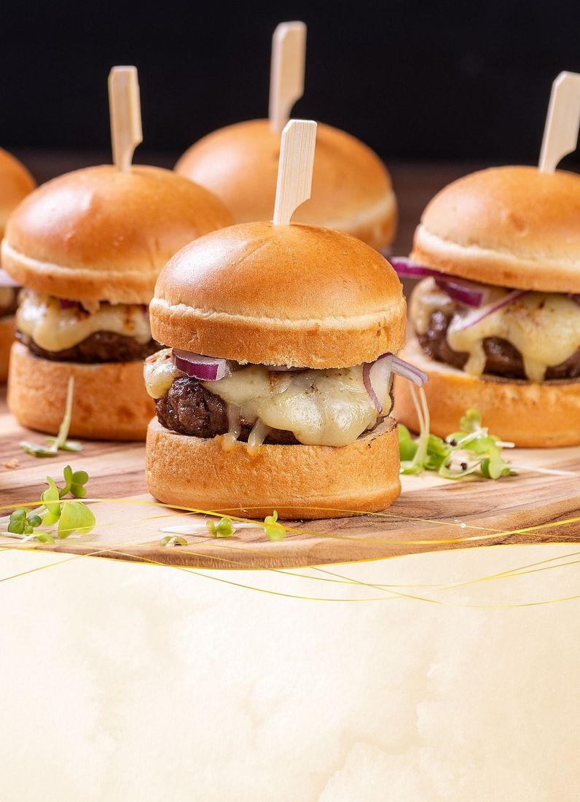
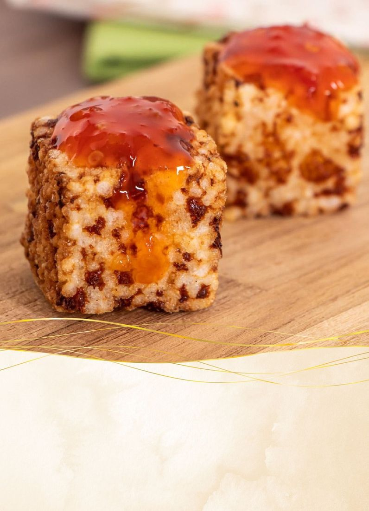


Gastronomia Indaiá · 15 Anos
A festa não para pra comer. Nem precisa.
Comida de mão
Comidinhas caprichadas pra comer com a mão, circulando pelo salão a festa inteira: sem prato, sem talher, sem precisar sentar. Ela dança, as amigas dançam, e o sabor vai junto.


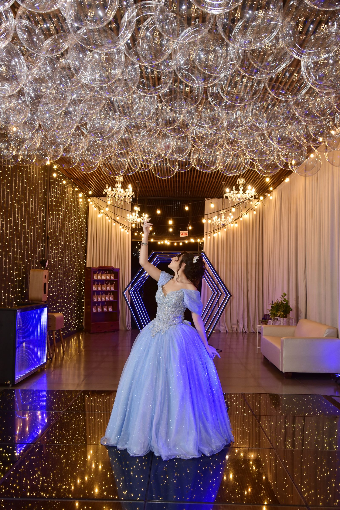
Na festa dela
É o formato que a galera dela ama: ninguém precisa sentar pra comer bem, e a pista não esvazia.
Foto de evento real
Do nosso acervo
Sabores do nosso acervo no espírito finger food: pequenos, caprichados e fáceis de comer em pé.
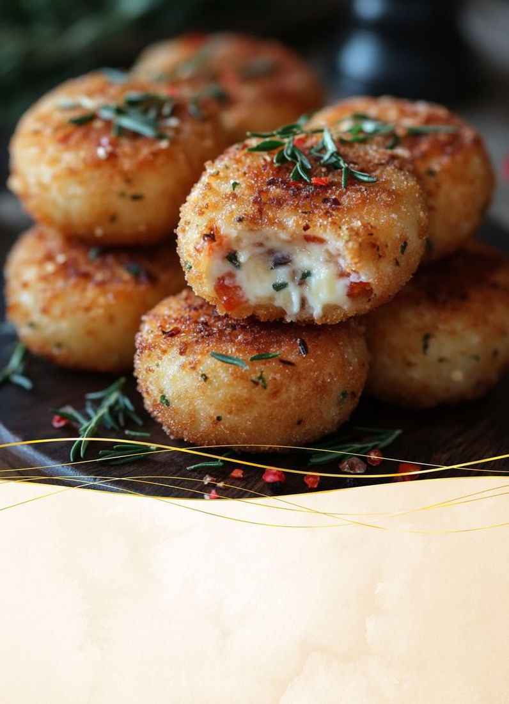
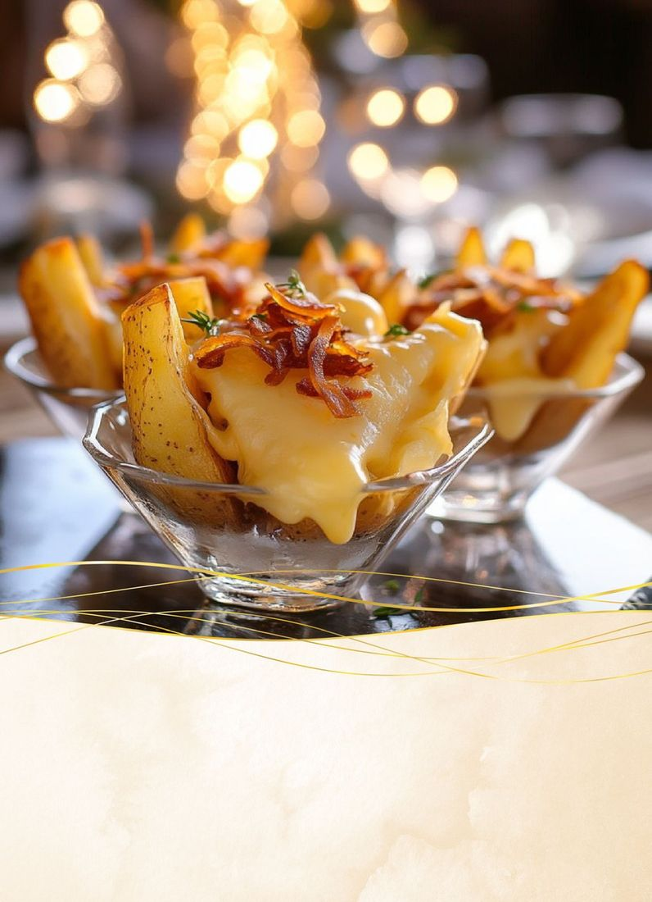
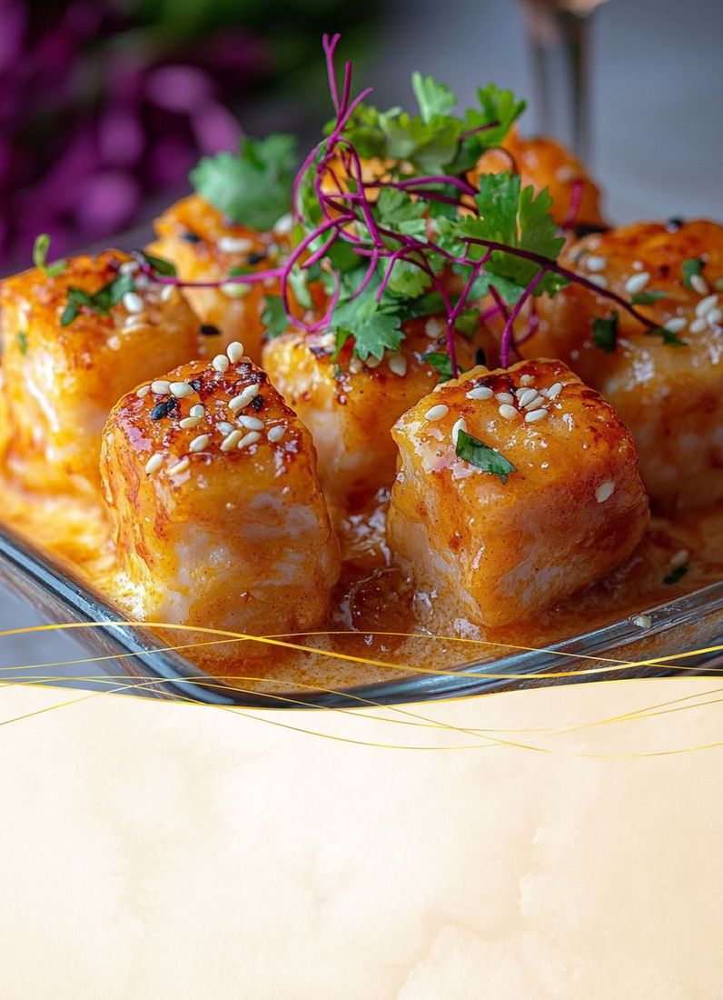
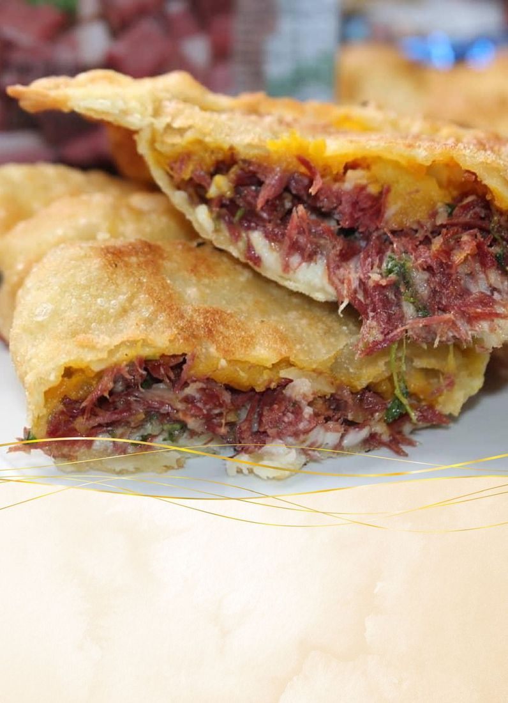
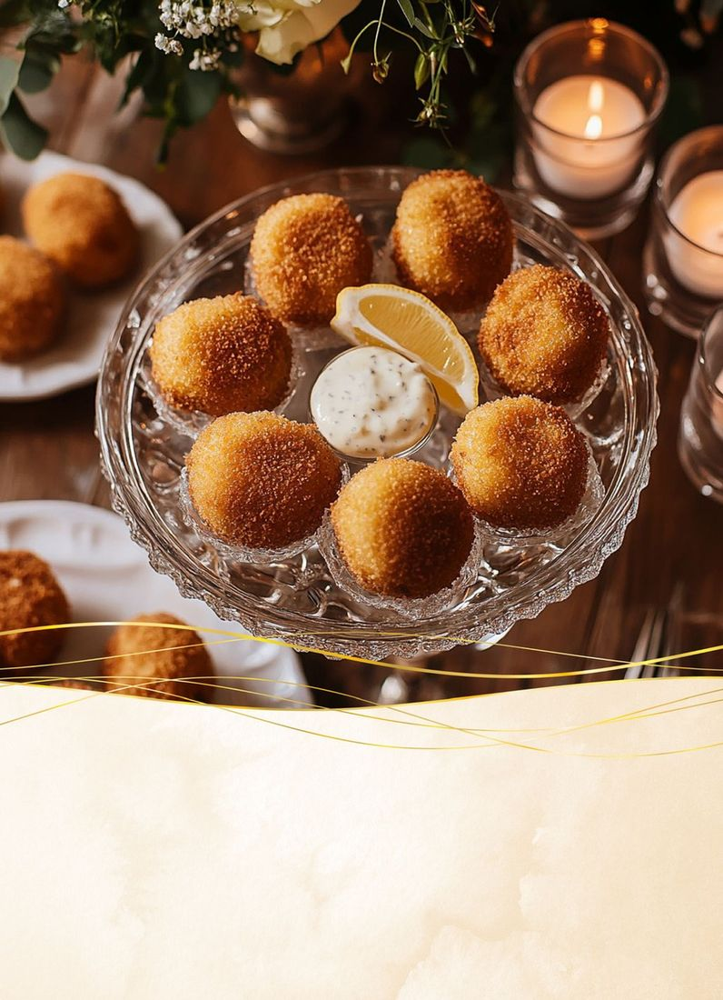
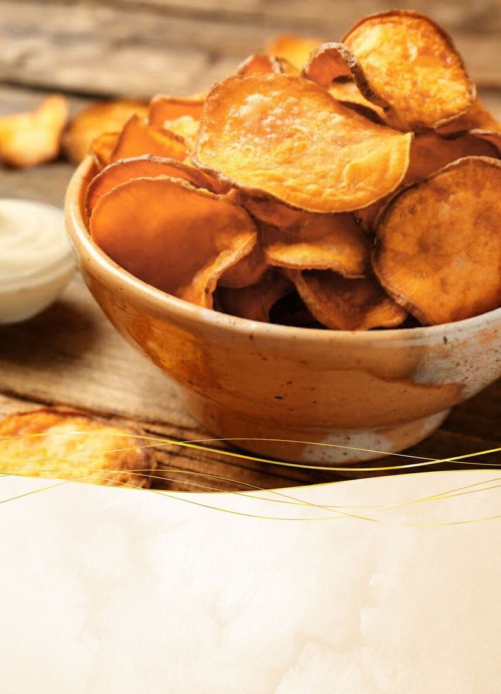

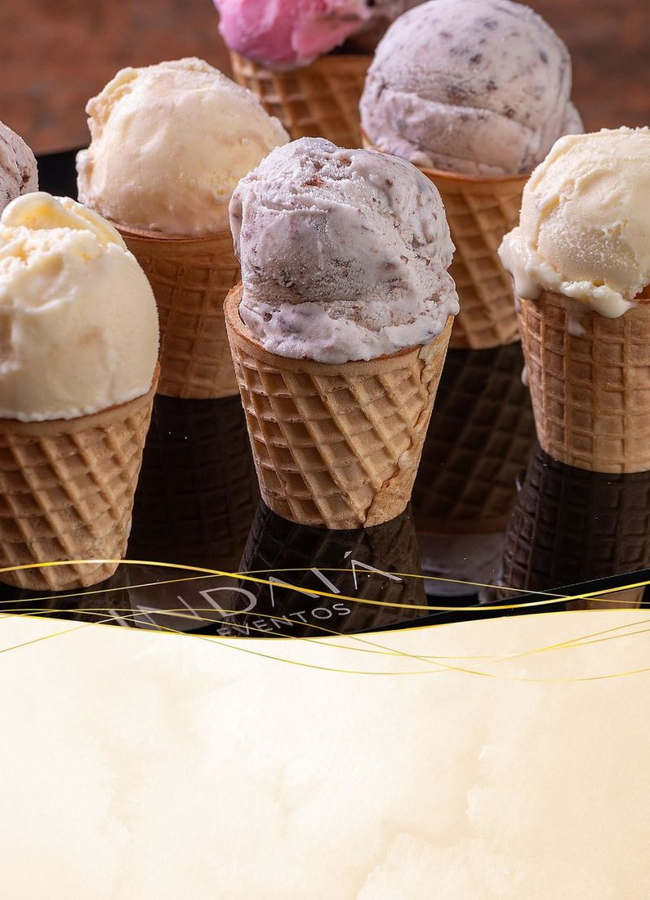
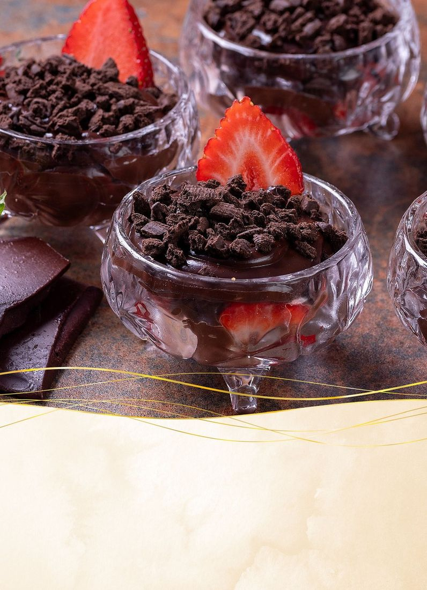
Deslize para o lado →
Escolham o da festa
O que muda de um pro outro é o tamanho da experiência: mais sabores circulando pela festa.
Finger Foods 1
O ponto de partida
Finger Foods 2
Mais sabores na festa
Finger Foods 3
A experiência completa
O cardápio de cada pacote, item a item, e os valores, o nosso time apresenta com vocês. E tem também a versão infantil, pensada pros primos pequenos.
Cada escolha conta uma história. Cada sabor vira lembrança.
O nosso time apresenta valores, combinações e o formato ideal pra festa dela.